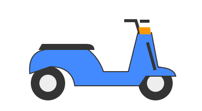

Ntorq
Bike rental in Tangalle
Illustration · actual bike may vary

Tangalle, Sri Lanka
Tour plans up to 7 days. Dio, Ntorq and ZR rentals.
Choose Dio, Ntorq or ZR. Share your dates, rental duration and pickup location for availability and a quote.

Confirm the rate, deposit, documents, riding eligibility, helmets, fuel policy and return arrangements with us before booking.
WhatsApp us